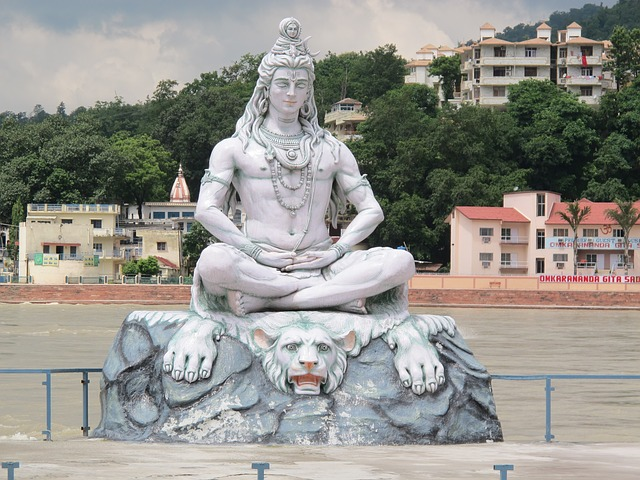

MAHA SHIVRATRI
{kind=link}
Shiv - the word meaning auspicious - is one of the Hindu Trinity, comprising of Brahma the creator ,Vishnu, the Preserver and Shiv or Mahesh, the Destroyer and Re-Producer of life. Time is invisible and formless. Therefore Mahakal Shiv, as per the Vedas, manifested himself as "LINGUM" to make mankind aware of the presence of Eternal Time. That day when Shiv manifested himself in the form of "Lingum" was the fourth day of the dark night in the month of Magh i.e. February-March. That night, when the many-splendoured Shiv-Lingum dazzled the world with its appearance, was the night of the Mahashivratri - the night of the great Shiv.Maharshi Narad advised mankind to fast on this day and pray to the All-Powerful Shiv so that in all His kindness He pardons all the sins that are committed by us in the past three lives. Lord Shiv is portrayed as an ascetic, sitting on a tiger skin, a bunch of poisonous snakes coiled round his blue neck, his hair and his body. He received the waters of the sacred river Ganga that rushed down from heaven with an unimaginable force and ferocity in the coil of his hair on his head to save the world from total annihilation and released the water slowly on the plains to flow. Lord Shiv has a third eye in the centre of his forehead along with a crescent moon. His most powerful weapon is the Trishul, the trident. Thus this Mahashivratri festival is in honour of Lord Shiv. Devotees observe fast the whole day and keep vigil throughout the night. After fasting the whole day devotees bathe with the water that is boiled with black sesame seeds to wash away bodily impurities. Then putting on new clothes they wash the Lingum with milk and perform religious rites, put haldi-kumkum on the lingum and a garland of white and pink lotus flowers. Bel leaves are placed in front of the Lingum and "aarthi" and "bhajans" are sung to invoke his blessings. The aroma of the lighted agarbattis seem to float in the air and from temples are heard the chinning of the bells and the sound of melodious devotional songs. All this surely must reach Mount Kailash and wake Him up from his deep meditation to bless mankind. Our ancient religious scriptures specially`Linga Puran', abound with stories of Lord Shiv's kindness and large-heartedness in giving boons to His devotees.
This festival of Maha Shivratri is held in great esteem in most of the region in India . In Ujjain in the famous temple of Mahakaleshwar Shiv's Lingum is worshipped with the performance of all the religious rites and rituals. The story goes that a powerful demon who lived on Ratnamal mountain attacked Avanti - the name of the present-day Ujjain in those days - and killed a Brahmin sage by putting him in fire. The angry Lord Shiv opened his third eye and burnt the demon to ashes. On that very spot of land where Lord Shiv opened his third eye and killed the demon appeared the Shiv-Lingum. A majestic temple was built on that ground. The mention of this temple is found in`Adi-Brahma Puran' and its detailed description in the`Gyan-Samhita'. Lord Shiv is known by many names like Shanker, Mahesh, Bholenath, Neelakanth, Shambhu Kailasheshwar, Umanath, Nataraj and others. He is the most sought -after deity amongst the Hindus and pray to him as the god of immense large-heartedness who they believe grant all their wishes. Around him are weaved many interesting stories that reveal His magnanimous heart. Not only this, but these stories and legends also enrich the Indian culture and art. Mythological Significance Maha Shivratri The Purans contain many stories and legends describing the origin of this Maha Shivratri festival. According to one, during the samundra manthan, a pot of poison merged from the ocean. This terrified the gods and demons as the poison was capable of destroying the entire world, and they ran to Lord Shiva for help. To protect the world from its evil effects, Lord Shiva drank the deadly poison but held it in his throat. Because of it, he was given the name Neelkantha. On the eve of Maha Shivratri festival we worship lord "Shiva" or "Nilkantha" It isbelieved that once Brahma and Vishnu, the two pillars of the holy Trinity were having an argument as to who was supreme. Brahma declared himself to be the Creator and the Destroyer, he commanded more respect. At that moment a huge lingam ablaze with flames appeared from nowhere. Both the gods were so overwhelmed by its constantly increasing size that they forgot the quarrel and decided to determine the size. Neither could ascertain the size. Just then, Shiva appeared out of the lingam and proclaimed that he was the progenitor of both of them. He was the Creator, Preserver and the Destroyer. He demanded that there after he be worshiped in his phallic form, the lingam.
Shivaratri Pooja
Shivaratri PoojaShivaratri Pooja has been given tremendous significance in Hindu mythology. It is said that ritual worship of Lord Shiva on a Shivaratri day pleases Lord Shiva the most. Devotees further believe that by pleasing Lord Shankara on the auspicious Shivaratri day, a person is absolved of past sins and is blessed with Moksha or salvation. Merits of Shivaratri Puja According to Shiva Purana, sincere worship of Lord Shiva yields merits including spiritual growth for the devotees. It also provides extensive details on the right way to perform Shivratri Puja. Shiva Purana further says that performing abhisheka of Shiva Linga with six different dravyas including milk, yoghurt, honey, ghee, sugar and water while chanting Sri Rudram, Chamakam and Dasa Shanthi pleases Lord.
Shivaratri Celebrations
Shivaratri Celebrations in India are marked with devotion and religious fervor. Joy is writ large on the faces of millions of Lord Shiva devotees as they start preparing for the biggest Lord Shiva festival in advance. Celebrations of Shivaratri began with the break of the dawn on the Shivratri day and continue all though the night. Devotees observe fast and spend the day in devotion and worship of Lord Shiva. Many worshippers also participate in the jaagran or the night vigil organized in various Shiva temples across the country. Devotees believe that sincere observance of Shivaratri puja and all night worship of Lord Shiva will absolve them of all their sins and liberate them from the cycle of birth and death.
Shivaratri Celebrations in Temples
After the ritual bath, preferably in the sacred waters of river Ganga, devotees pay a visit to the nearest Lord Shiva temple carrying the traditional puja items like milk, water, bel leaves, fruits, incense stick, oil lamp etc. Due to massive popularity of the festival several stalls selling puja items come up outside the temple and do a thriving business. In the bigger and more popular Shiva temples there is massive rush of devotees. Long queues can be noticed as devotees, mostly women, wait for their turn to perform puja. Since, bathing of Shiva Linga with milk is part of the Shivaratri Puja tradition; little rivers are formed due to the excessively overflowing milk and fruit in the Shiva temples on this day. Ritual worship of Shiva Linga is done by temple priests every three hours all through the day and night of Shivaratri Festival. Shouts of ‘Shivaji ki Jai’, chanting of the mantra, ‘Om Namah Shivaya’ and ringing of temple bells make the atmosphere religious and devotional. Nightlong vigil on Shivratri or the Jaagran is celebrated by singing of devotional hymns and songs in worship of Lord Shiva. And, it is only in the following morning that the devotees break their fast by consuming prasad offered to the Lord.